Data analysis for revision (July 2021: without splitting)
library(ggplot2)
library(ggrepel)
library(dplyr)
library(pander)
options(stringsAsFactors = F)
panderOptions('table.split.table', Inf)
source('../code/rlib_doc.R')
source('https://gist.githubusercontent.com/liangyy/43912b3ecab5d10c89f9d4b2669871c9/raw/3ca651cfa53ffccb8422f432561138a46e93710f/my_ggplot_theme.R')
theme_set(theme_bw(base_size = 15))
o = get_meta_for_supp()
df_color_category = o$df_color_category
color_mixer = o$color_mixer
pop_color_mixer = o$pop_color_mixer
# type_shape = o$type_shape
type_shape = c('PTRS' = 15, 'PRS' = 19)
score_color_code = o$score_color_code
non_eur_pops = c('African', 'Chinese', 'Indian', 'Caribbean')
pop_map = data.frame(
pop = c('African', 'Chinese', 'Indian', 'Caribbean', 'British_test'),
pop2 = c('AFR', 'E.ASN', 'S.ASN', 'CAR', 'EUR')
)
pop_map2 = data.frame(
pop = c('African', 'Chinese', 'Indian', 'Caribbean', 'British_test', 'British_validation', 'British_valid'),
pop2 = c('AFR', 'E.ASN', 'S.ASN', 'CAR', 'EUR test', 'EUR ref.', 'EUR ref.')
)
pop_color_mixer2 = c('AFR' = "#E74C3C", "British_test" = "#28B463", "British_validation" = "#D4AC0D",
'E.ASN' = "#3498DB", 'S.ASN' = "#9B59B6", 'CAR' = "#FFFF00")
score_color_code = c('PRS' = "#999999", 'PTRS (GTEx EUR)' = "#E69F00", 'PTRS (MESA EUR)' = "#E69F00", 'PTRS (MESA AFHI)' = "#56B4E9", 'PTRS (MESA ALL)' = "#F633FF")1 PVE and h2
1.1 GTEx EUR whole blood model and top-10 models
df_h2 = load_hsq('~/Desktop/tmp/ptrs-ukb_misc/hsq.data_split.British-test-1.txt')
bad_traits = NULL # df_h2$trait[ is.na(df_h2$h_sq) | df_h2$h_sq < 0.05 ]
bad_traits_pve = NULL # df_h2$trait[ is.na(df_h2$h_sq) | df_h2$h_sq < 0.05 ]
df_pve = load_hsq('~/Desktop/tmp/ptrs-ukb_misc/reml_from_hail_martin_et_al_traits_x_ctimp_Whole_Blood_x_British-test-1.tsv') %>% mutate(pop = 'British_test')
df_pve = df_pve[ ! df_pve$trait %in% bad_traits_pve, ]
df_pve10 = load_hsq('~/Desktop/tmp/ptrs-ukb_misc/reml_from_hail-multi-tissue-tissue_svd_x_martin_et_al_traits_x_ctimp_x_British-test-1.tsv')
df_pve10 = df_pve10[ ! df_pve10$trait %in% bad_traits_pve, ]df_pve_ma = load_hsq('~/Desktop/tmp/ptrs-ukb_misc/old/reml_from_hail_martin_et_al_traits_x_ALL_x_British-test-1.tsv') %>% mutate(pop = 'British_test')
df_pve_ma = df_pve_ma[ ! df_pve_ma$trait %in% bad_traits_pve, ]
ratio_fe_wb = calc_regu(df_h2, df_pve)
ratio_fe_ma = calc_regu(df_h2, df_pve_ma)
ratio_fe_10 = calc_regu(df_h2, df_pve10)
rbind(
as.data.frame(ratio_fe_ma$fe, col.names = c('ratio_mean', 'ratio_se')) %>% mutate(tissue = 'MESA (ALL) Monocyte'),
as.data.frame(ratio_fe_wb$fe, col.names = c('ratio_mean', 'ratio_se')) %>% mutate(tissue = 'GTEx EUR Whole Blood'),
as.data.frame(ratio_fe_10$fe, col.names = c('ratio_mean', 'ratio_se')) %>% mutate(tissue = 'GTEx EUR Top 10 Tissues')
) %>%
rename(regulability_mean = ratio_mean, regulability_se = ratio_se) %>%
pander| regulability_mean | regulability_se | tissue |
|---|---|---|
| 0.2176 | 0.03079 | MESA (ALL) Monocyte |
| 0.2285 | 0.02939 | GTEx EUR Whole Blood |
| 0.3554 | 0.04688 | GTEx EUR Top 10 Tissues |
unstable_traits = df_h2$trait[ is.na(df_h2$h_sq) | df_h2$h_sq < 0.05 ]
rbind(
ratio_fe_wb$raw %>% mutate(tissue = 'GTEx EUR Whole blood'),
ratio_fe_ma$raw %>% mutate(tissue = 'MESA EUR Monocyte'),
ratio_fe_10$raw %>% mutate(tissue = 'GTEx EUR Top 10 tissues')) %>%
mutate(tissue = factor(tissue, levels = c('MESA EUR Monocyte', 'GTEx EUR Whole blood', 'GTEx EUR Top 10 tissues'))) %>%
filter(! trait %in% unstable_traits) %>%
ggplot() +
geom_violin(aes(x = tissue, y = ratio_mean * 100)) +
geom_boxplot(aes(x = tissue, y = ratio_mean * 100), width = .2) + th +
ylab('% of heritability explained')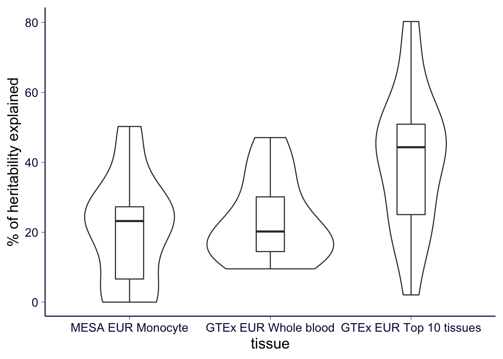
Takeaway: Proportion of heritability explained by predicted transcrptome is shown for MESA ALL and MESA EUR models and GTEx 10 tissues combined (using European individuals).
ratio_min = ratio_fe_wb$fe$m - 1.96 * ratio_fe_wb$fe$se
ratio_max = ratio_fe_wb$fe$m + 1.96 * ratio_fe_wb$fe$se
df_merge = inner_join(
df_h2, df_pve %>% filter(pop == 'British_test'),
by = c('trait'),
suffix = c('.h2', '.pve')
)
df_merge %>% left_join(df_color_category, by = 'trait') %>%
ggplot(aes(color = group)) +
geom_abline(slope = ratio_min, intercept = 0) +
geom_abline(slope = ratio_max, intercept = 0) +
geom_errorbar(aes(x = h_sq.h2, ymin = h_sq.pve - 1.96 * h_sq_se.pve, ymax = h_sq.pve + 1.96 * h_sq_se.pve)) +
geom_errorbarh(aes(xmin = h_sq.h2 - 1.96 * h_sq_se.h2, xmax = h_sq.h2 + 1.96 * h_sq_se.h2, y = h_sq.pve)) +
geom_point(aes(x = h_sq.h2, y = h_sq.pve)) + th +
scale_color_manual(values = color_mixer) + coord_equal() +
theme(
legend.position = c(.15, .8),
legend.text = element_text(size = 12),
legend.title = element_blank(),
legend.background = element_rect(fill = alpha('white', 0))
) +
xlab('Estimated heritability') +
ylab('PVE of predicted transcriptome \n in GTEx whole blood')## Warning: Removed 1 rows containing missing values (geom_errorbarh).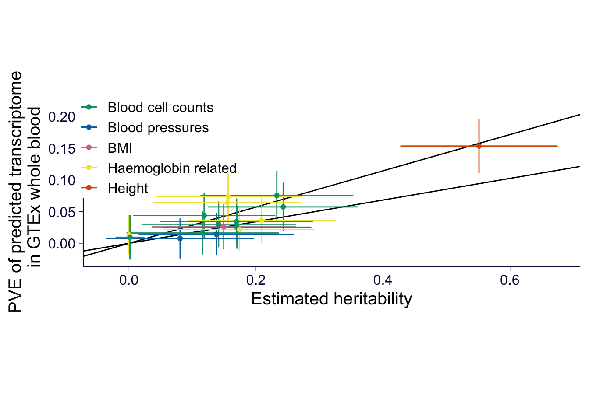
Takeaway: Comparing heritability vs PTRS PVE (using European individuals).
1.2 MESA CAU vs AFHI models
df_cau = rbind(
load_hsq('~/Desktop/tmp/ptrs-ukb_misc/new_split/reml_from_hail_martin_et_al_traits_x_CAU_x_African.tsv') %>%
mutate(population = 'AFR'),
load_hsq('~/Desktop/tmp/ptrs-ukb_misc/reml_from_hail_martin_et_al_traits_x_CAU_x_British-test-1.tsv') %>%
mutate(population = 'EUR'),
load_hsq('~/Desktop/tmp/ptrs-ukb_misc/new_split/reml_from_hail_martin_et_al_traits_x_CAU_x_Indian.tsv') %>%
mutate(population = 'S.ASN'),
load_hsq('~/Desktop/tmp/ptrs-ukb_misc/reml_from_hail_martin_et_al_traits_x_CAU_x_Chinese.tsv') %>%
mutate(population = 'E.ASN')
)
df_afhi = rbind(
load_hsq('~/Desktop/tmp/ptrs-ukb_misc/new_split/reml_from_hail_martin_et_al_traits_x_AFHI_x_African.tsv') %>%
mutate(population = 'AFR'),
load_hsq('~/Desktop/tmp/ptrs-ukb_misc/reml_from_hail_martin_et_al_traits_x_AFHI_x_British-test-1.tsv') %>%
mutate(population = 'EUR'),
load_hsq('~/Desktop/tmp/ptrs-ukb_misc/new_split/reml_from_hail_martin_et_al_traits_x_AFHI_x_Indian.tsv') %>%
mutate(population = 'S.ASN'),
load_hsq('~/Desktop/tmp/ptrs-ukb_misc/reml_from_hail_martin_et_al_traits_x_AFHI_x_Chinese.tsv') %>%
mutate(population = 'E.ASN')
)
df_mesa = rbind(
df_afhi %>% mutate(model = 'AFHI'), df_cau %>% mutate(model = 'CAU')
)
df_mesa = df_mesa[ ! df_mesa$trait %in% bad_traits, ]afr = df_mesa[ df_mesa$population == 'AFR', ]
# t.test(afr$h_sq[afr$model == 'AFHI'], afr$h_sq[afr$model == 'CAU'], paired = T)
tmp_m = df_mesa %>% reshape2::dcast(trait + population ~ model, value.var = 'h_sq')
tmp_se = df_mesa %>% reshape2::dcast(trait + population ~ model, value.var = 'h_sq_se')
diff = inner_join(tmp_m, tmp_se, by = c('trait', 'population'), suffix = c('.mean', '.se'))
diff = diff %>% mutate(diff = AFHI.mean - CAU.mean, diff_se = sqrt(AFHI.se ^ 2 + CAU.se ^ 2))
diff_sum = diff %>% filter(!(is.na(AFHI.se) | is.na(CAU.se))) %>%
group_by(population) %>% do(as.data.frame(meta_fixed(.$diff, .$diff_se)))
diff_sum = diff %>% filter(!(is.na(AFHI.se) | is.na(CAU.se))) %>%
group_by(population) %>% do(test_afhi_vs_cau(.$AFHI.mean, .$CAU.mean))
# diff_sum %>% mutate(pop2 = order_pop(population)) %>% ggplot() +
# geom_hline(yintercept = 0, linetype = 2) +
# geom_errorbar(aes(x = pop2, ymin = m - 1.96 * se, ymax = m + 1.96 * se), width = 0.1) +
# geom_point(aes(x = pop2, y = m), size = 5, color = 'gray') +
# ylab('Change in PVE \n (MESA AFHI - MESA EUR)') +
# xlab('Target population') + th
diff_sum %>% mutate(pop2 = order_pop(population)) %>% ggplot() +
geom_hline(yintercept = 0, linetype = 2) +
geom_errorbar(aes(x = pop2, ymin = ci_low, ymax = ci_high), width = 0.1) +
geom_point(aes(x = pop2, y = delta_pve), size = 5, color = 'gray') +
ylab('Change in PVE \n (MESA AFHI - MESA EUR)') +
xlab('Target population') + th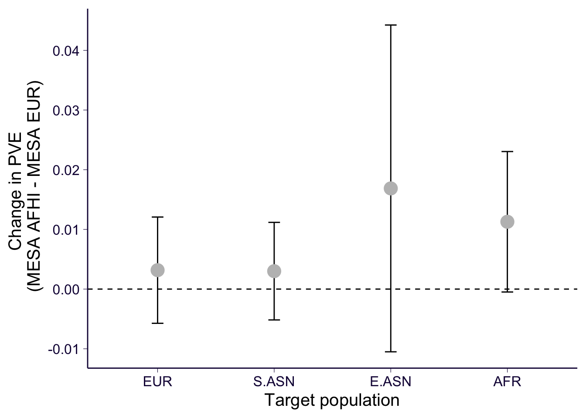
diff_sum %>% pander(caption = 'MESA AFHI PVE vs. MESA EUR PVE')| population | delta_pve | ci_low | ci_high | wilcox_stat | wilcox_pval |
|---|---|---|---|---|---|
| AFR | 0.01128 | -0.0004882 | 0.02305 | 104 | 0.0654 |
| E.ASN | 0.01687 | -0.01051 | 0.04424 | 34 | 0.2031 |
| EUR | 0.003171 | -0.005731 | 0.01207 | 56 | 0.4973 |
| S.ASN | 0.003004 | -0.005168 | 0.01118 | 74 | 0.4543 |
Takeaway: The PTRS PVE difference between MESA AFHI and EUR models.
diff %>% mutate(pop2 = order_pop(population)) %>% left_join(df_color_category, by = 'trait') %>% ggplot() +
geom_abline(slope = 1, intercept = 0) +
geom_point(aes(x = CAU.mean, y = AFHI.mean, color = group)) +
facet_wrap(~pop2, ncol = 5) + coord_equal() +
scale_color_manual(values = color_mixer) +
th2 +
theme(legend.position = 'none') +
xlab('PVE of predicted transcriptome \n in MESA EUR monocyte') +
ylab('PVE of predicted transcriptome \n in MESA AFHI monocyte') +
theme(axis.text.x = element_text(angle = 90, vjust = 0.5))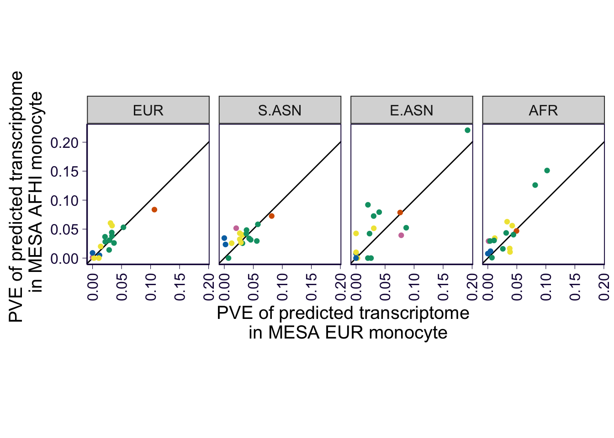
Takeaway: As a supplementary for the PTRS PVE difference between MESA AFHI and EUR models, we show the PVE of MESA AFHI and EUR models directly.
2 Prediction performance
df1 = load_best('~/Desktop/tmp/ptrs-tf/from_nucleus/elastic_net_ptrs_gtex_british_updated_indivs_lambda.performance.csv') %>% filter(!trait %in% bad_traits)
df1pt = load_best('~/Desktop/tmp/ptrs-tf/from_nucleus/pt_ptrs_gtex_british_updated_indivs_lambda.performance.csv') %>% filter(!trait %in% bad_traits)
df2_cau = load_best('~/Desktop/tmp/ptrs-tf/from_nucleus/elastic_net_ptrs_mesa_british_updated_lambda.performance.csv', desired_tag = 'train') %>% filter(!trait %in% bad_traits)
df2pt_cau = load_best('~/Desktop/tmp/ptrs-tf/from_nucleus/pt_ptrs_mesa_british_updated_lambda.performance.csv', desired_tag = 'train') %>% filter(!trait %in% bad_traits)
df2_afhi = load_best('~/Desktop/tmp/ptrs-tf/from_nucleus/elastic_net_ptrs_mesa_british_updated_lambda.performance.csv', desired_tag = 'against') %>% filter(!trait %in% bad_traits)
df2pt_afhi = load_best('~/Desktop/tmp/ptrs-tf/from_nucleus/pt_ptrs_mesa_british_updated_lambda.performance.csv', desired_tag = 'against') %>% filter(!trait %in% bad_traits)
df3 = load_best('~/Desktop/tmp/ptrs-tf/from_nucleus/elastic_net_ptrs_mesa_all_british_updated_lambda.performance.csv') %>% filter(!trait %in% bad_traits)
df3pt = load_best('~/Desktop/tmp/ptrs-tf/from_nucleus/pt_ptrs_mesa_all_british_updated_lambda.performance.csv') %>% filter(!trait %in% bad_traits)
df4 = load_best('~/Desktop/tmp/ptrs-tf/from_nucleus/prs_british_updated_indivs_lambda.performance.csv') %>% filter(!trait %in% bad_traits)
df4$sample[ df4$sample == 'British_validation' ] = 'British_valid'2.1 Prediction performance vs PVE/h2
prs = inner_join(df4 %>% filter(sample == 'British_test'), df_h2, by = 'trait')
ptrs = inner_join(df1 %>% filter(sample == 'British_test'), df_pve %>% filter(pop == 'British_test') %>% select(-pop), by = 'trait')
rbind(prs %>% mutate(method = 'PRS'), ptrs %>% mutate(method = 'PTRS')) %>%
left_join(df_color_category, by = 'trait') %>%
ggplot(aes(color = group)) +
geom_abline(slope = 1, intercept = 0) +
# geom_errorbar(aes(x = h_sq, ymin = r2_mean - 1.96 * r2_sd, ymax = r2_mean + 1.96 * r2_sd)) +
geom_errorbarh(aes(xmin = h_sq - 1.96 * h_sq_se, xmax = h_sq + 1.96 * h_sq_se, y = r2_max)) +
geom_point(aes(x = h_sq, y = r2_max, shape = method), size = 3) +
th +
scale_color_manual(values = color_mixer) +
scale_shape_manual(values = type_shape) +
coord_equal() +
theme(legend.position = 'top', legend.title = element_blank()) +
xlab('Heritability or PTRS PVE') +
ylab(expression(tilde(R)^2 * 'of PRS or PTRS (GTEx EUR)'))## Warning: Removed 1 rows containing missing values (geom_errorbarh).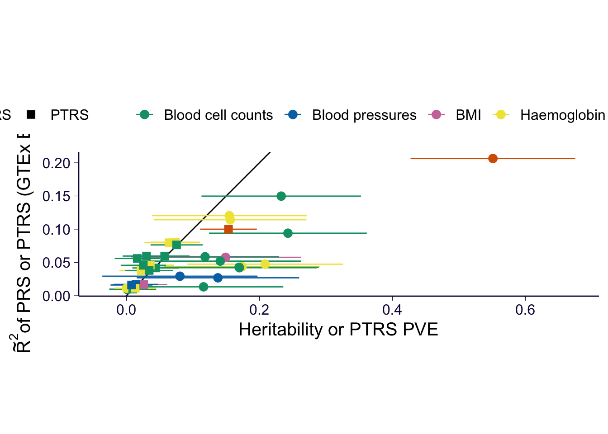
Takeaway: Comparing heritability vs PRS R2 and PTRS PVE vs PTRS R2 (GTEx EUR) using European individuals.
# DO IT LATER
# ptrs = inner_join(df1, df_pve, by = c('trait', 'sample' = 'pop'))
# ptrs %>%
# filter(sample %in% non_eur_pops) %>%
# left_join(pop_map, by = c('sample' = 'pop')) %>%
# mutate(pop2 = order_pop(pop2)) %>%
# left_join(df_color_category, by = 'trait') %>%
# ggplot(aes(color = pop2)) +
# geom_abline(slope = 1, intercept = 0) +
# # geom_errorbar(aes(x = h_sq, ymin = r2_mean - 1.96 * r2_sd, ymax = r2_mean + 1.96 * r2_sd)) +
# # geom_errorbarh(aes(xmin = h_sq - 1.96 * h_sq_se, xmax = h_sq + 1.96 * h_sq_se, y = r2_mean)) +
# geom_point(aes(x = h_sq, y = r2_max), size = 3) +
# th +
# scale_color_manual(values = pop_color_mixer2) +
# coord_equal() +
# theme(legend.position = 'top', legend.title = element_blank()) +
# xlab('PTRS PVE') +
# ylab(expression(tilde(R)^2 * 'of PTRS (GTEx EUR)'))prs = inner_join(df4 %>% filter(sample == 'British_test'), df_h2, by = 'trait')
ptrs = inner_join(df2_cau %>% filter(sample == 'British_test'), df_pve_ma %>% filter(pop == 'British_test') %>% select(-pop), by = 'trait')
rbind(prs %>% mutate(method = 'PRS'), ptrs %>% mutate(method = 'PTRS')) %>%
left_join(df_color_category, by = 'trait') %>%
filter(method != 'PRS') %>%
ggplot(aes(color = group)) +
geom_abline(slope = 1, intercept = 0) +
# geom_errorbar(aes(x = h_sq, ymin = r2_mean - 1.96 * r2_sd, ymax = r2_mean + 1.96 * r2_sd)) +
geom_errorbarh(aes(xmin = h_sq - 1.96 * h_sq_se, xmax = h_sq + 1.96 * h_sq_se, y = r2_max)) +
geom_point(aes(x = h_sq, y = r2_max, shape = method), size = 3) +
th +
scale_color_manual(values = color_mixer) +
scale_shape_manual(values = type_shape) +
coord_equal() +
theme(legend.position = 'top', legend.title = element_blank()) +
xlab('PTRS PVE') +
ylab(expression(tilde(R)^2 * 'of PTRS (MESA EUR)'))## Warning: Removed 3 rows containing missing values (geom_errorbarh).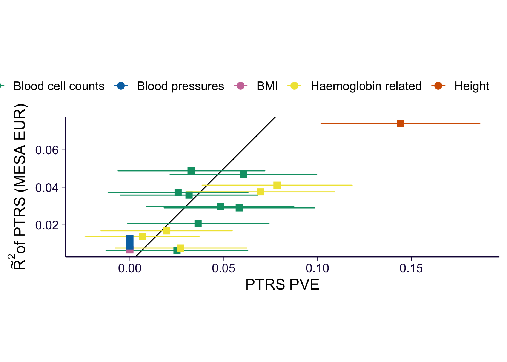
Takeaway: Comparing PTRS PVE vs PTRS R2 (MESA EUR) using European individuals.
2.2 PRS vs PTRS perdiction performance
kk = inner_join(
df1 %>% filter(sample == 'British_test'),
df4 %>% filter(sample == 'British_test'),
by = 'trait', suffix = c('.ptrs', '.prs')
)
kk %>% left_join(df_color_category, by = 'trait') %>% ggplot(aes(color = group)) +
geom_abline(slope = 1, intercept = 0) +
geom_point(aes(x = r2_max.prs, y = r2_max.ptrs)) +
# geom_errorbar(aes(x = r2_mean.prs, ymin = r2_mean.ptrs - 1.96 * r2_sd.ptrs, ymax = r2_mean.ptrs + 1.96 * r2_sd.ptrs)) +
# geom_errorbarh(aes(xmin = r2_max.prs - 1.96 * r2_sd.prs, xmax = r2_max.prs + 1.96 * r2_sd.prs, y = r2_mean.ptrs)) +
geom_label_repel(aes(x = r2_max.prs, y = r2_max.ptrs, label = trait)) + th +
xlab('Prediction accuracy of PRS') +
ylab('Prediction accuracy of PTRS') +
scale_color_manual(values = color_mixer) + coord_equal() + theme(legend.position = 'top', legend.title = element_blank()) + guides(color = guide_legend(nrow = 2, byrow = TRUE))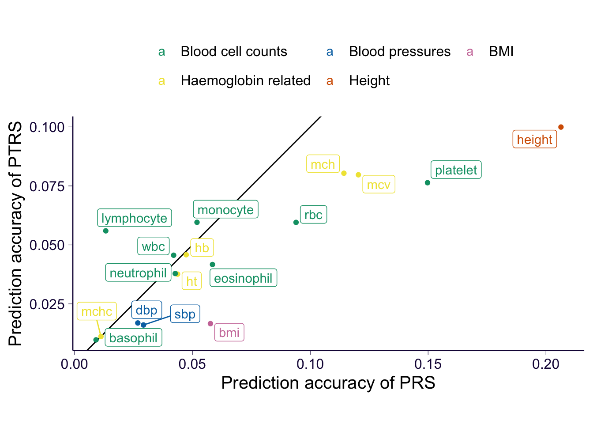
Takeaway: R2 comparison: PRS vs PTRS (GTEx EUR) using European individuals.
kk = inner_join(
df1 %>% filter(sample %in% c('British_test', non_eur_pops)),
df4 %>% filter(sample %in% c('British_test', non_eur_pops)),
by = c('trait', 'sample'), suffix = c('.ptrs', '.prs')
)
kk %>% left_join(df_color_category, by = 'trait') %>% ggplot(aes(color = group)) +
geom_abline(slope = 1, intercept = 0) +
geom_point(aes(x = r2_max.prs, y = r2_max.ptrs)) +
# geom_errorbar(aes(x = r2_mean.prs, ymin = r2_mean.ptrs - 1.96 * r2_sd.ptrs, ymax = r2_mean.ptrs + 1.96 * r2_sd.ptrs)) +
# geom_errorbarh(aes(xmin = r2_mean.prs - 1.96 * r2_sd.prs, xmax = r2_mean.prs + 1.96 * r2_sd.prs, y = r2_mean.ptrs)) +
# geom_label_repel(aes(x = r2_mean.prs, y = r2_mean.ptrs, label = trait)) + th +
xlab('Prediction accuracy of PRS') +
ylab('Prediction accuracy of \n PTRS (GTEx EUR)') +
scale_color_manual(values = color_mixer) +
# coord_equal() +
theme(legend.position = 'top', legend.title = element_blank()) + guides(color = guide_legend(nrow = 2, byrow = TRUE)) +
facet_wrap(~sample, ncol = 5, scales = 'free') + th2 + theme(legend.position = 'none')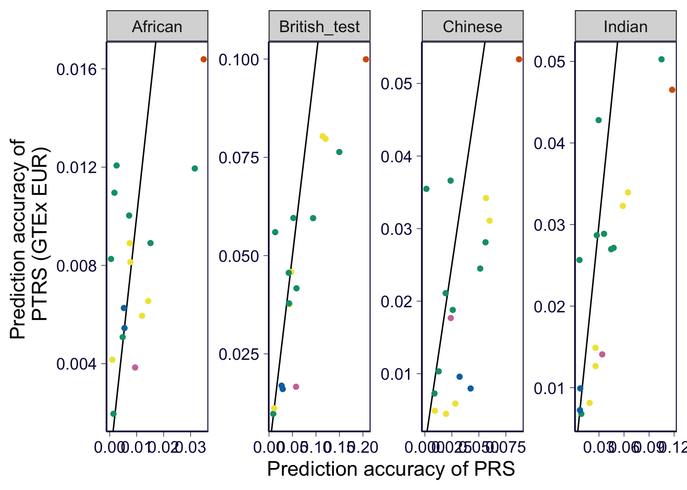
Takeaway: As a supplementary of PRS vs PTRS R2 comparison, we also show non-European results.
2.3 PTRS EN vs P+T
kk = inner_join(
df1 %>% filter(sample == 'British_test'),
df1pt %>% filter(sample == 'British_test'),
by = 'trait', suffix = c('.en', '.pt')
)
kk %>% left_join(df_color_category, by = 'trait') %>% ggplot(aes(color = group)) +
geom_abline(slope = 1, intercept = 0) +
geom_point(aes(x = r2_max.pt, y = r2_max.en)) +
geom_label_repel(aes(x = r2_max.pt, y = r2_max.en, label = trait)) + th +
xlab('Prediction accuracy of PTRS (P+T)') +
ylab('Prediction accuracy of PTRS (EN)') +
scale_color_manual(values = color_mixer) + coord_equal() + theme(legend.position = 'top', legend.title = element_blank()) + guides(color = guide_legend(nrow = 2, byrow = TRUE))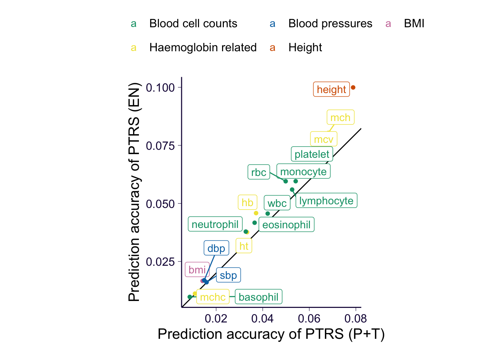
Takeaway: Comparing GTEx EUR PTRS R2 for PTRS (EN) and PTRS (P+T) using European individuals.
kk = inner_join(
df3 %>% filter(sample == 'British_test'),
df3pt %>% filter(sample == 'British_test'),
by = 'trait', suffix = c('.en', '.pt')
)
kk %>% left_join(df_color_category, by = 'trait') %>% ggplot(aes(color = group)) +
geom_abline(slope = 1, intercept = 0) +
geom_point(aes(x = r2_max.pt, y = r2_max.en)) +
geom_label_repel(aes(x = r2_max.pt, y = r2_max.en, label = trait)) + th +
xlab('Prediction accuracy of PTRS (P+T)') +
ylab('Prediction accuracy of PTRS (EN)') +
scale_color_manual(values = color_mixer) + coord_equal() + theme(legend.position = 'top', legend.title = element_blank()) + guides(color = guide_legend(nrow = 2, byrow = TRUE))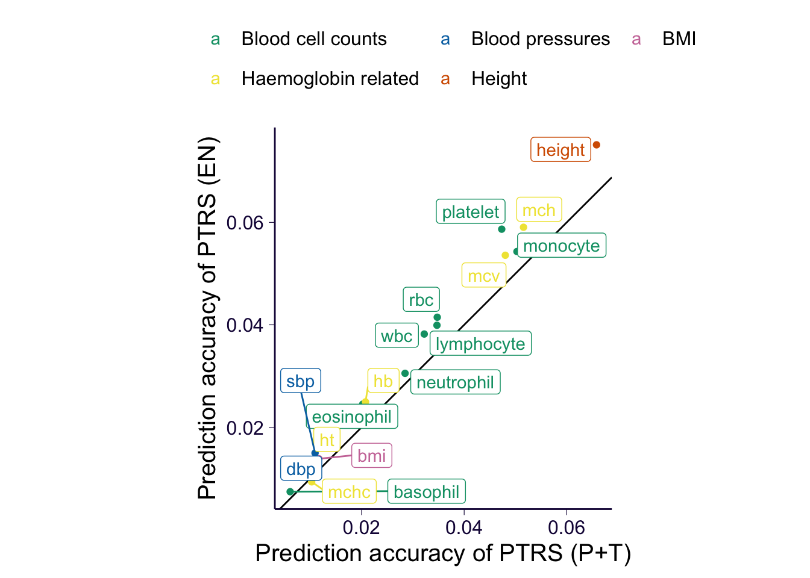
Takeaway: As a supplementary, we also compare MESA ALL PTRS R2 for PTRS (EN) and PTRS (P+T) using European individuals.
2.4 PTRS performance MESA CAU vs MESA AFHI
tmp = inner_join(
df2_cau %>% filter(sample %in% c(non_eur_pops, 'British_test')) %>% mutate(model = 'MESA EUR'),
df2_afhi %>% filter(sample %in% c(non_eur_pops, 'British_test')) %>% mutate(model = 'MESA AFHI'),
by = c('sample', 'trait'), suffix = c('.eur', '.afhi')
)
tmp %>% left_join(df_color_category, by = 'trait') %>% left_join(pop_map, by = c('sample' = 'pop')) %>%
mutate(pop2 = order_pop(pop2)) %>%
ggplot(aes(color = group)) +
geom_abline(slope = 1, intercept = 0) +
geom_point(aes(x = r2_max.eur, y = r2_max.afhi)) +
facet_wrap(~pop2, scales = 'free', ncol = 5) +
coord_cartesian() + th2 +
scale_color_manual(values = color_mixer) + theme(legend.position = 'none') +
ylab(expression(tilde(R)^2 * 'of PTRS (MESA AFHI)')) +
xlab(expression(tilde(R)^2 * 'of PTRS (MESA CAU)')) +
theme(axis.text.x = element_text(angle = 90, vjust = 0.5))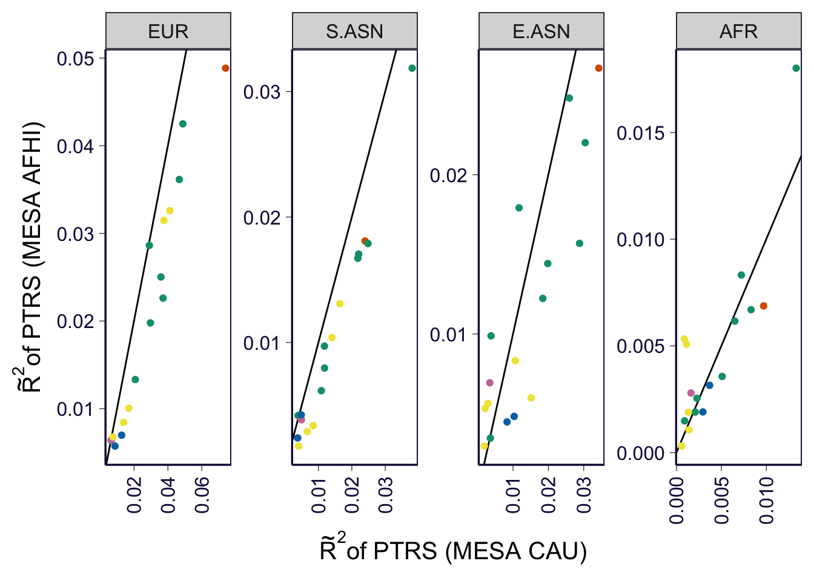
diff_sum = tmp %>% group_by(sample) %>% do(test_afhi_vs_cau(.$r2_max.afhi, .$r2_max.eur))diff_sum %>% left_join(pop_map, by = c('sample' = 'pop')) %>% mutate(pop2 = order_pop(pop2)) %>% ggplot() +
geom_hline(yintercept = 0, linetype = 2) +
geom_errorbar(aes(x = pop2, ymin = ci_low, ymax = ci_high), width = 0.1) +
geom_point(aes(x = pop2, y = delta_pve), size = 5, color = 'gray') +
ylab('Change in accuracy \n (MESA AFHI - MESA EUR)') +
xlab('Target population') + th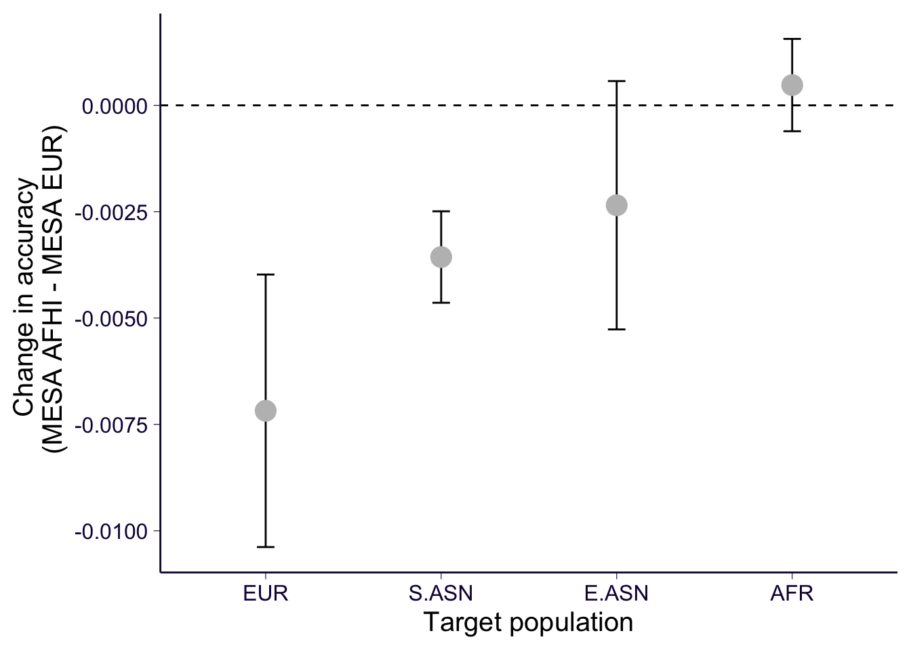
diff_sum %>% pander('Predictive performance MESA AFHI vs MESA EUR')| sample | delta_pve | ci_low | ci_high | wilcox_stat | wilcox_pval |
|---|---|---|---|---|---|
| African | 0.0004768 | -0.0006085 | 0.001562 | 86 | 0.6777 |
| British_test | -0.00718 | -0.01038 | -0.003977 | 0 | 1.526e-05 |
| Chinese | -0.002348 | -0.005267 | 0.0005703 | 44 | 0.1324 |
| Indian | -0.003565 | -0.00464 | -0.00249 | 1 | 3.052e-05 |
Takeaway: Comparing PTRS R2 for MESA EUR and MESA AFHI.
tmp = inner_join(
df2pt_cau %>% filter(sample %in% c(non_eur_pops, 'British_test')) %>% mutate(model = 'MESA EUR'),
df2pt_afhi %>% filter(sample %in% c(non_eur_pops, 'British_test')) %>% mutate(model = 'MESA AFHI'),
by = c('sample', 'trait'), suffix = c('.eur', '.afhi')
)
tmp %>% left_join(df_color_category, by = 'trait') %>% left_join(pop_map, by = c('sample' = 'pop')) %>%
mutate(pop2 = order_pop(pop2)) %>%
ggplot(aes(color = group)) +
geom_abline(slope = 1, intercept = 0) +
geom_point(aes(x = r2_max.eur, y = r2_max.afhi)) +
facet_wrap(~pop2, scales = 'free', ncol = 5) +
coord_cartesian() + th2 +
scale_color_manual(values = color_mixer) + theme(legend.position = 'none') +
ylab(expression(tilde(R)^2 * 'of PTRS (MESA AFHI)')) +
xlab(expression(tilde(R)^2 * 'of PTRS (MESA CAU)')) +
theme(axis.text.x = element_text(angle = 90, vjust = 0.5))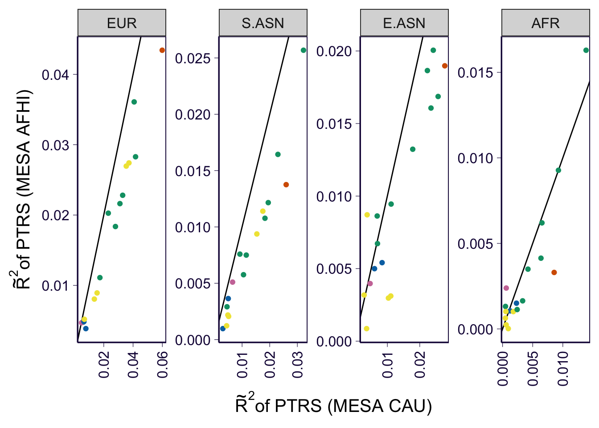
diff_sum = tmp %>% group_by(sample) %>% do(test_afhi_vs_cau(.$r2_max.afhi, .$r2_max.eur))diff_sum %>% left_join(pop_map, by = c('sample' = 'pop')) %>% mutate(pop2 = order_pop(pop2)) %>% ggplot() +
geom_hline(yintercept = 0, linetype = 2) +
geom_errorbar(aes(x = pop2, ymin = ci_low, ymax = ci_high), width = 0.1) +
geom_point(aes(x = pop2, y = delta_pve), size = 5, color = 'gray') +
ylab('Change in accuracy \n (MESA AFHI - MESA EUR)') +
xlab('Target population') + th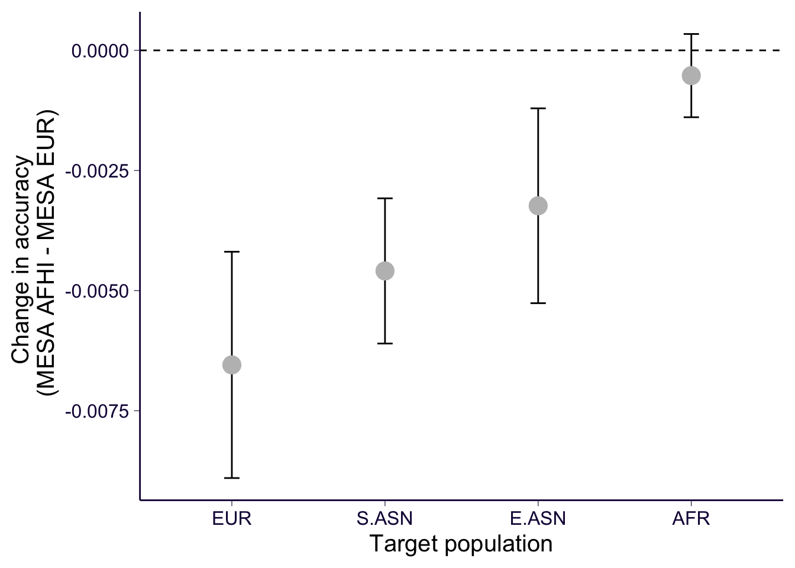
diff_sum %>% pander('Predictive performance MESA AFHI vs MESA EUR')| sample | delta_pve | ci_low | ci_high | wilcox_stat | wilcox_pval |
|---|---|---|---|---|---|
| African | -0.0005255 | -0.001392 | 0.0003406 | 49 | 0.2069 |
| British_test | -0.006546 | -0.008901 | -0.004191 | 0 | 1.526e-05 |
| Chinese | -0.003234 | -0.005262 | -0.001207 | 20 | 0.005569 |
| Indian | -0.004591 | -0.006102 | -0.003079 | 0 | 1.526e-05 |
Takeaway: As a supplementary, we also compare PTRS (P+T) R2 for MESA EUR and MESA AFHI.
3 Portability
df1p = calc_port_max(df1)
df1ptp = calc_port_max(df1pt)
ref_mesa = df2_cau %>% filter(sample == 'British_valid')
df2p_cau = calc_port_max(df2_cau)
df2p_afhi = calc_port_max(df2_afhi, ref_mesa)
df2ptp_cau = calc_port_max(df2pt_cau)
df2ptp_afhi = calc_port_max(df2pt_afhi, ref_mesa)
df3p = calc_port_max(df3)
df3ptp = calc_port_max(df3pt)
df4p = calc_port_max(df4)tmp = rbind(
df1p %>% mutate(method = 'PTRS (GTEx EUR)'),
df4p %>% mutate(method = 'PRS')
) %>% filter(sample != 'British_insample')
tmp %>%
left_join(pop_map2, by = c('sample' = 'pop')) %>% mutate(pop2 = order_pop(pop2)) %>%
ggplot() +
geom_violin(aes(x = pop2, y = portability, color = method), position = position_dodge(0.65)) +
geom_boxplot(aes(x = pop2, y = portability, color = method), width = 0.1, position = position_dodge(0.65)) + th + scale_color_manual(values = score_color_code) +
theme(legend.position = c(0.8, 0.8), legend.title = element_blank())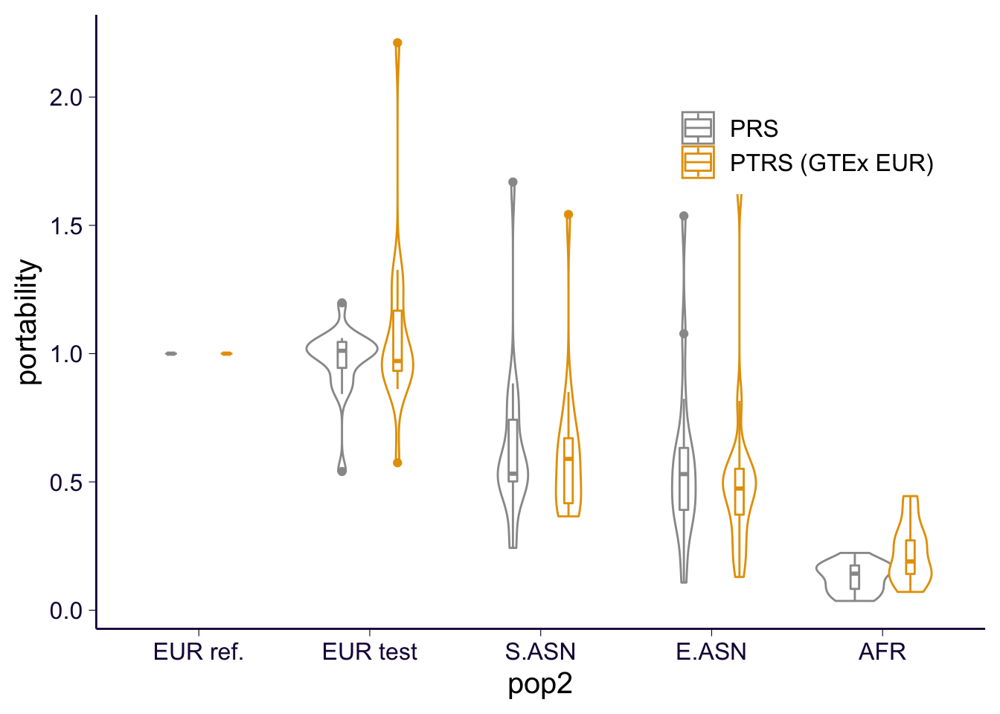
tmp %>%
reshape2::dcast(trait + sample ~ method, value.var = 'portability') %>%
group_by(sample) %>%
do(test_a_vs_b(.$PRS, .$`PTRS (GTEx EUR)`)) %>%
pander('Portability: GTEx EUR whole blood')## Warning in wilcox.test.default(a, b, paired = TRUE): cannot compute exact
## p-value with zeroes| sample | delta | ci_low | ci_high | pval | wilcox_stat | wilcox_pval |
|---|---|---|---|---|---|---|
| African | -0.09734 | -0.1647 | -0.02995 | 0.007447 | 24 | 0.01099 |
| British_test | -0.1061 | -0.336 | 0.1238 | 0.3423 | 70 | 0.7819 |
| British_valid | 0 | NA | NA | NA | 0 | NA |
| Chinese | 0.05609 | -0.1889 | 0.3011 | 0.634 | 97 | 0.3529 |
| Indian | 0.02279 | -0.1603 | 0.2059 | 0.7953 | 94 | 0.4307 |
Takeaway: GTEx EUR PTRS portability
tmp = rbind(
df1ptp %>% mutate(method = 'PTRS (GTEx EUR)'),
df4p %>% mutate(method = 'PRS')
) %>% filter(sample != 'British_insample')
tmp %>%
left_join(pop_map2, by = c('sample' = 'pop')) %>% mutate(pop2 = order_pop(pop2)) %>%
ggplot() +
geom_violin(aes(x = pop2, y = portability, color = method), position = position_dodge(0.65)) +
geom_boxplot(aes(x = pop2, y = portability, color = method), width = 0.1, position = position_dodge(0.65)) + th + scale_color_manual(values = score_color_code) +
theme(legend.position = c(0.8, 0.8), legend.title = element_blank())
tmp %>%
reshape2::dcast(trait + sample ~ method, value.var = 'portability') %>%
group_by(sample) %>%
do(test_a_vs_b(.$PRS, .$`PTRS (GTEx EUR)`)) %>%
pander('Portability: GTEx EUR whole blood')## Warning in wilcox.test.default(a, b, paired = TRUE): cannot compute exact
## p-value with zeroes| sample | delta | ci_low | ci_high | pval | wilcox_stat | wilcox_pval |
|---|---|---|---|---|---|---|
| African | -0.09622 | -0.1591 | -0.03331 | 0.0051 | 27 | 0.01743 |
| British_test | -0.07947 | -0.2143 | 0.05541 | 0.2296 | 61 | 0.4874 |
| British_valid | 0 | NA | NA | NA | 0 | NA |
| Chinese | 0.1429 | -0.05519 | 0.3409 | 0.1458 | 113 | 0.08865 |
| Indian | 0.04915 | -0.08561 | 0.1839 | 0.4507 | 98 | 0.3289 |
Takeaway: GTEx EUR PTRS (P+T) portability
tmp = rbind(
df3p %>% mutate(method = 'PTRS (MESA ALL)'),
df4p %>% mutate(method = 'PRS')
) %>% filter(sample != 'British_insample')
# tmp %>%
# left_join(pop_map2, by = c('sample' = 'pop')) %>% mutate(pop2 = order_pop(pop2)) %>%
# ggplot() +
# geom_violin(aes(x = pop2, y = portability, color = method), position = position_dodge(0.65)) +
# geom_boxplot(aes(x = pop2, y = portability, color = method), width = 0.1, position = position_dodge(0.65)) + th + scale_color_manual(values = score_color_code) +
# theme(legend.position = c(0.8, 0.8), legend.title = element_blank())
# tmp %>% reshape2::dcast(trait + sample ~ method, value.var = 'portability') %>% group_by(sample) %>% do(test_a_vs_b(.$PRS, .$`PTRS (MESA ALL)`)) %>%
# pander('Portability: MESA ALL')
opops = c('Caribbean', 'African')
outlier = tmp %>% filter(sample %in% opops, portability > 0.5)
tmp %>% filter((!sample %in% opops) | (!trait %in% outlier$trait)) %>%
reshape2::dcast(trait + sample ~ method, value.var = 'portability') %>%
group_by(sample) %>%
do(test_a_vs_b(.$PRS, .$`PTRS (MESA ALL)`)) %>%
pander('Portability: MESA ALL (remove outlier)')## Warning in wilcox.test.default(a, b, paired = TRUE): cannot compute exact
## p-value with zeroes| sample | delta | ci_low | ci_high | pval | wilcox_stat | wilcox_pval |
|---|---|---|---|---|---|---|
| African | -0.03247 | -0.0946 | 0.02967 | 0.2829 | 55 | 0.5282 |
| British_test | -0.03034 | -0.1432 | 0.08251 | 0.5766 | 75 | 0.9632 |
| British_valid | 0 | NA | NA | NA | 0 | NA |
| Chinese | 0.1888 | -0.02222 | 0.3998 | 0.07608 | 120 | 0.03954 |
| Indian | 0.07757 | -0.008981 | 0.1641 | 0.07562 | 112 | 0.09837 |
tmp %>% filter((!sample %in% opops) | (!trait %in% outlier$trait)) %>%
left_join(pop_map2, by = c('sample' = 'pop')) %>% mutate(pop2 = order_pop(pop2)) %>%
ggplot() +
geom_violin(aes(x = pop2, y = portability, color = method), position = position_dodge(0.65)) +
geom_boxplot(aes(x = pop2, y = portability, color = method), width = 0.1, position = position_dodge(0.65)) + th + scale_color_manual(values = score_color_code) +
theme(legend.position = c(0.8, 0.8), legend.title = element_blank()) +
theme(axis.title.x = element_blank())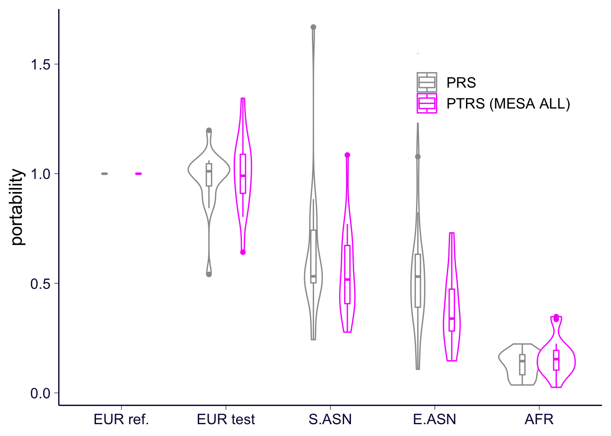
Takeaway: MESA ALL PTRS portability (removed outliers)
tmp = rbind(
df3ptp %>% mutate(method = 'PTRS (MESA ALL)'),
df4p %>% mutate(method = 'PRS')
) %>% filter(sample != 'British_insample')
tmp %>%
left_join(pop_map2, by = c('sample' = 'pop')) %>% mutate(pop2 = order_pop(pop2)) %>%
ggplot() +
geom_violin(aes(x = pop2, y = portability, color = method), position = position_dodge(0.65)) +
geom_boxplot(aes(x = pop2, y = portability, color = method), width = 0.1, position = position_dodge(0.65)) + th + scale_color_manual(values = score_color_code) +
theme(legend.position = c(0.8, 0.8), legend.title = element_blank())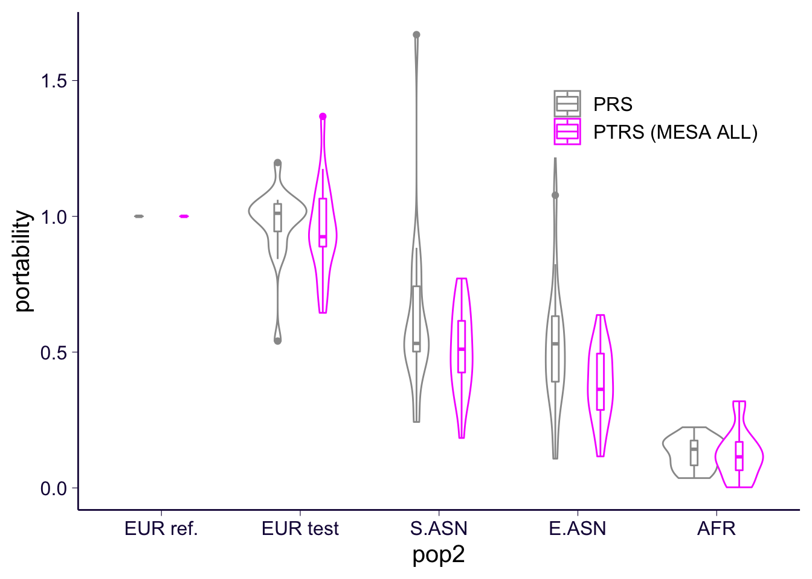
tmp %>% reshape2::dcast(trait + sample ~ method, value.var = 'portability') %>% group_by(sample) %>% do(test_a_vs_b(.$PRS, .$`PTRS (MESA ALL)`)) %>%
pander('Portability: MESA ALL')## Warning in wilcox.test.default(a, b, paired = TRUE): cannot compute exact
## p-value with zeroes| sample | delta | ci_low | ci_high | pval | wilcox_stat | wilcox_pval |
|---|---|---|---|---|---|---|
| African | 0.005371 | -0.05576 | 0.0665 | 0.8546 | 88 | 0.6112 |
| British_test | 0.02336 | -0.07121 | 0.1179 | 0.6076 | 88 | 0.6112 |
| British_valid | 0 | NA | NA | NA | 0 | NA |
| Chinese | 0.185 | -0.02036 | 0.3903 | 0.07427 | 118 | 0.05054 |
| Indian | 0.1246 | -0.00587 | 0.255 | 0.05994 | 124 | 0.02322 |
# opops = c('Caribbean', 'African')
# outlier = tmp %>% filter(sample %in% opops, portability > 0.5)
# tmp %>% filter((!sample %in% opops) | (!trait %in% outlier$trait)) %>%
# reshape2::dcast(trait + sample ~ method, value.var = 'portability') %>%
# group_by(sample) %>%
# do(test_a_vs_b(.$PRS, .$`PTRS (MESA ALL)`)) %>%
# pander('Portability: MESA ALL (remove outlier)')
# tmp %>% filter((!sample %in% opops) | (!trait %in% outlier$trait)) %>%
# left_join(pop_map2, by = c('sample' = 'pop')) %>% mutate(pop2 = order_pop(pop2)) %>%
# ggplot() +
# geom_violin(aes(x = pop2, y = portability, color = method), position = position_dodge(0.65)) +
# geom_boxplot(aes(x = pop2, y = portability, color = method), width = 0.1, position = position_dodge(0.65)) + th + scale_color_manual(values = score_color_code) +
# theme(legend.position = c(0.8, 0.8), legend.title = element_blank()) +
# theme(axis.title.x = element_blank())Takeaway: MESA ALL PTRS (P+T) portability
tmp = rbind(
df2p_cau %>% mutate(method = 'PTRS (MESA EUR)'),
df4p %>% mutate(method = 'PRS')
) %>% filter(sample != 'British_insample')
tmp %>%
left_join(pop_map2, by = c('sample' = 'pop')) %>% mutate(pop2 = order_pop(pop2)) %>%
ggplot() +
geom_violin(aes(x = pop2, y = portability, color = method), position = position_dodge(0.65)) +
geom_boxplot(aes(x = pop2, y = portability, color = method), width = 0.1, position = position_dodge(0.65)) + th + scale_color_manual(values = score_color_code) +
theme(legend.position = c(0.8, 0.8), legend.title = element_blank())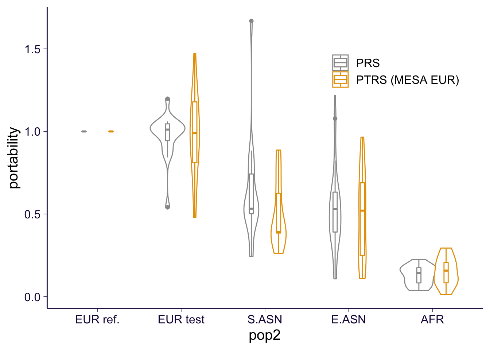
tmp %>% reshape2::dcast(trait + sample ~ method, value.var = 'portability') %>% group_by(sample) %>% do(test_a_vs_b(.$PRS, .$`PTRS (MESA EUR)`)) %>%
pander('Portability: MESA EUR')## Warning in wilcox.test.default(a, b, paired = TRUE): cannot compute exact
## p-value with zeroes| sample | delta | ci_low | ci_high | pval | wilcox_stat | wilcox_pval |
|---|---|---|---|---|---|---|
| African | -0.02218 | -0.07387 | 0.02951 | 0.3765 | 58 | 0.4038 |
| British_test | -0.005655 | -0.1703 | 0.159 | 0.9429 | 84 | 0.7467 |
| British_valid | 0 | NA | NA | NA | 0 | NA |
| Chinese | 0.08961 | -0.1082 | 0.2874 | 0.3511 | 102 | 0.2435 |
| Indian | 0.1303 | -0.04619 | 0.3069 | 0.1371 | 112 | 0.09837 |
opops = c('Caribbean', 'African')
# outlier = tmp %>% filter(sample %in% opops, portability > 0.5)
# tmp %>% filter((!sample %in% opops) | (!trait %in% outlier$trait)) %>%
# reshape2::dcast(trait + sample ~ method, value.var = 'portability') %>%
# group_by(sample) %>% do(test_a_vs_b(.$PRS, .$`PTRS (MESA EUR)`)) %>%
# pander('Portability: MESA EUR (remove outlier)')
# tmp %>% filter((!sample %in% opops) | (!trait %in% outlier$trait)) %>%
# left_join(pop_map2, by = c('sample' = 'pop')) %>% mutate(pop2 = order_pop(pop2)) %>%
# ggplot() +
# geom_violin(aes(x = pop2, y = portability, color = method), position = position_dodge(0.65)) +
# geom_boxplot(aes(x = pop2, y = portability, color = method), width = 0.1, position = position_dodge(0.65)) + th + scale_color_manual(values = score_color_code) +
# theme(legend.position = c(0.8, 0.8), legend.title = element_blank()) +
# theme(axis.title.x = element_blank())Takeaway: MESA EUR PTRS portability
tmp = rbind(
df2ptp_cau %>% mutate(method = 'PTRS (MESA EUR)'),
df4p %>% mutate(method = 'PRS')
) %>% filter(sample != 'British_insample')
tmp %>%
left_join(pop_map2, by = c('sample' = 'pop')) %>% mutate(pop2 = order_pop(pop2)) %>%
ggplot() +
geom_violin(aes(x = pop2, y = portability, color = method), position = position_dodge(0.65)) +
geom_boxplot(aes(x = pop2, y = portability, color = method), width = 0.1, position = position_dodge(0.65)) + th + scale_color_manual(values = score_color_code) +
theme(legend.position = c(0.8, 0.8), legend.title = element_blank())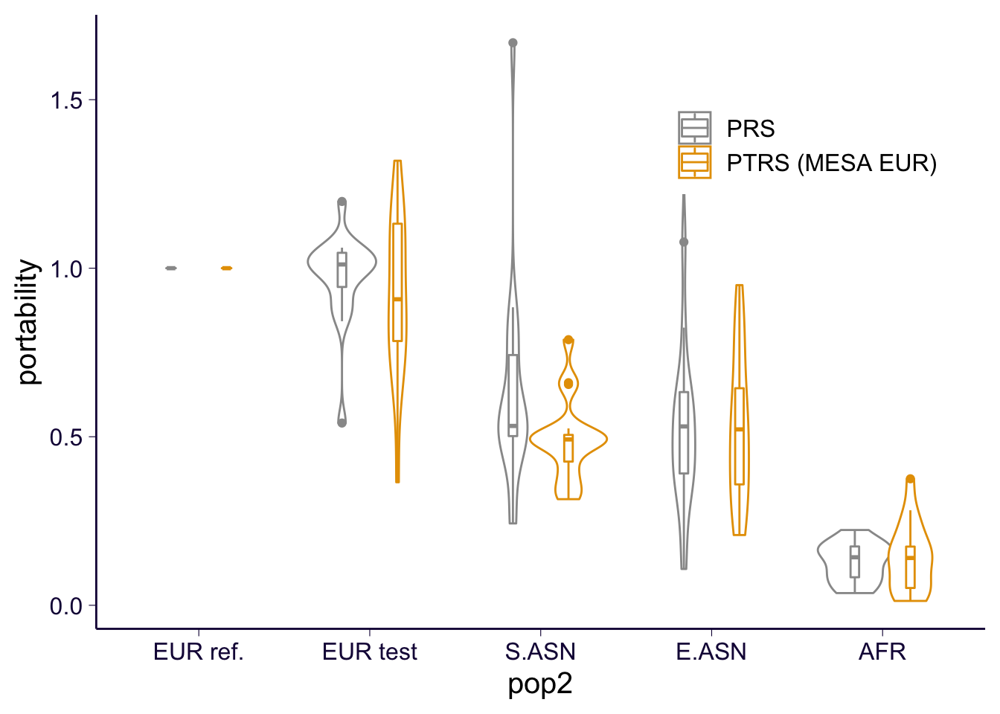
tmp %>% reshape2::dcast(trait + sample ~ method, value.var = 'portability') %>% group_by(sample) %>% do(test_a_vs_b(.$PRS, .$`PTRS (MESA EUR)`)) %>%
pander('Portability: MESA EUR')## Warning in wilcox.test.default(a, b, paired = TRUE): cannot compute exact
## p-value with zeroes| sample | delta | ci_low | ci_high | pval | wilcox_stat | wilcox_pval |
|---|---|---|---|---|---|---|
| African | -0.01252 | -0.07119 | 0.04615 | 0.657 | 77 | 1 |
| British_test | 0.05953 | -0.06504 | 0.1841 | 0.3261 | 94 | 0.4307 |
| British_valid | 0 | NA | NA | NA | 0 | NA |
| Chinese | 0.04772 | -0.1249 | 0.2203 | 0.5659 | 91 | 0.5171 |
| Indian | 0.1367 | -0.02054 | 0.2939 | 0.08395 | 121 | 0.03479 |
opops = c('Caribbean', 'African')
# outlier = tmp %>% filter(sample %in% opops, portability > 0.5)
# tmp %>% filter((!sample %in% opops) | (!trait %in% outlier$trait)) %>%
# reshape2::dcast(trait + sample ~ method, value.var = 'portability') %>%
# group_by(sample) %>% do(test_a_vs_b(.$PRS, .$`PTRS (MESA EUR)`)) %>%
# pander('Portability: MESA EUR (remove outlier)')
# tmp %>% filter((!sample %in% opops) | (!trait %in% outlier$trait)) %>%
# left_join(pop_map2, by = c('sample' = 'pop')) %>% mutate(pop2 = order_pop(pop2)) %>%
# ggplot() +
# geom_violin(aes(x = pop2, y = portability, color = method), position = position_dodge(0.65)) +
# geom_boxplot(aes(x = pop2, y = portability, color = method), width = 0.1, position = position_dodge(0.65)) + th + scale_color_manual(values = score_color_code) +
# theme(legend.position = c(0.8, 0.8), legend.title = element_blank()) +
# theme(axis.title.x = element_blank())Takeaway: MESA EUR PTRS (P+T) portability
tmp2 = rbind(
df2p_afhi %>% mutate(method = 'PTRS (MESA AFHI)') %>% filter(sample != 'British_insample', sample != 'British_test'),
df4p %>% mutate(method = 'PRS'),
df2p_cau %>% mutate(method = 'PTRS (MESA EUR)')
)
outlier = tmp %>% filter(sample == 'African', portability > 0.5)
# tmp2 %>% filter(sample == 'African') %>%
# mutate(method = order_method(method)) %>%
# ggplot() +
# geom_violin(aes(x = sample, y = portability, color = method), position = position_dodge(0.5)) +
# geom_boxplot(aes(x = sample, y = portability, color = method), width = 0.1, position = position_dodge(0.5)) +
# scale_color_manual(values = score_color_code) + th
tmp2 %>% filter(sample == 'African' & (!trait %in% outlier$trait)) %>%
mutate(method = order_method(method)) %>%
ggplot() +
geom_violin(aes(x = sample, y = portability, color = method), position = position_dodge(0.5)) +
geom_boxplot(aes(x = sample, y = portability, color = method), width = 0.1, position = position_dodge(0.5)) +
scale_color_manual(values = score_color_code) + th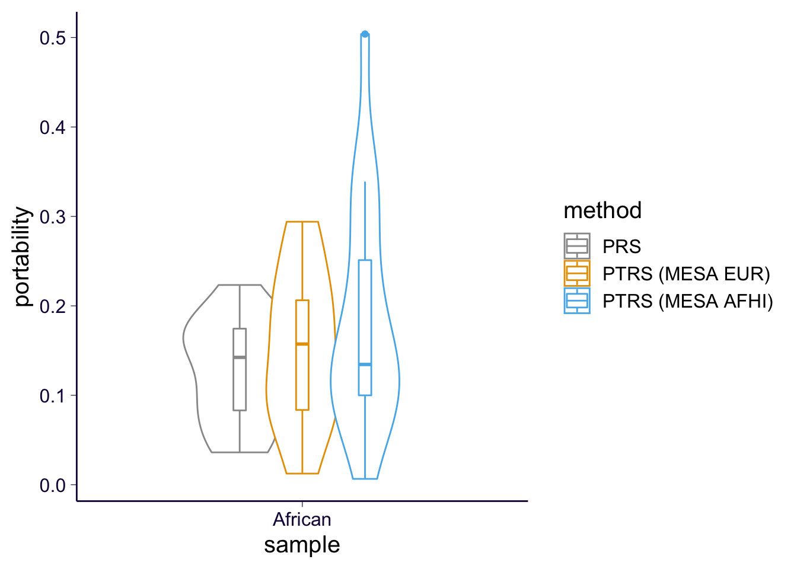
res1 = tmp2 %>% filter((sample == 'African') & (!trait %in% outlier$trait)) %>%
reshape2::dcast(trait + sample ~ method, value.var = 'portability') %>%
do(test_a_vs_b(.$PRS, .$`PTRS (MESA EUR)`))
rownames(res1) = NULL
res2 = tmp2 %>% filter((sample == 'African') & (!trait %in% outlier$trait)) %>%
reshape2::dcast(trait + sample ~ method, value.var = 'portability') %>%
do(test_a_vs_b(.$`PTRS (MESA EUR)`, .$`PTRS (MESA AFHI)`))
rownames(res2) = NULL
rbind(
res1 %>% mutate(type = 'PRS vs MESA EUR'),
res2 %>% mutate(type = 'MESA EUR vs MESA AFHI')
) %>% pander| delta | ci_low | ci_high | pval | wilcox_stat | wilcox_pval | type |
|---|---|---|---|---|---|---|
| -0.02218 | -0.07387 | 0.02951 | 0.3765 | 58 | 0.4038 | PRS vs MESA EUR |
| -0.03581 | -0.09475 | 0.02313 | 0.2161 | 59 | 0.4307 | MESA EUR vs MESA AFHI |
# tmp2 %>% filter((sample != 'African') | (!trait %in% outlier$trait)) %>% reshape2::dcast(trait + sample ~ method, value.var = 'portability') %>% do(test_a_vs_b(.$PRS, .$`PTRS (MESA EUR)`))
# tmp2 %>% filter((sample != 'African') | (!trait %in% outlier$trait)) %>% reshape2::dcast(trait + sample ~ method, value.var = 'portability') %>% do(test_a_vs_b(.$`PTRS (MESA EUR)`, .$`PTRS (MESA AFHI)`))Takeaway: Comparing the portabilities of MESA EUR and AFHI PTRS in AFR individuals.
tmp2 = rbind(
df2ptp_afhi %>% mutate(method = 'PTRS (MESA AFHI)') %>% filter(sample != 'British_insample', sample != 'British_test'),
df4p %>% mutate(method = 'PRS'),
df2ptp_cau %>% mutate(method = 'PTRS (MESA EUR)')
)
outlier = tmp %>% filter(sample == 'African', portability > 0.5)
# tmp2 %>% filter(sample == 'African') %>%
# mutate(method = order_method(method)) %>%
# ggplot() +
# geom_violin(aes(x = sample, y = portability, color = method), position = position_dodge(0.5)) +
# geom_boxplot(aes(x = sample, y = portability, color = method), width = 0.1, position = position_dodge(0.5)) +
# scale_color_manual(values = score_color_code) + th
tmp2 %>% filter(sample == 'African' & (!trait %in% outlier$trait)) %>%
mutate(method = order_method(method)) %>%
ggplot() +
geom_violin(aes(x = sample, y = portability, color = method), position = position_dodge(0.5)) +
geom_boxplot(aes(x = sample, y = portability, color = method), width = 0.1, position = position_dodge(0.5)) +
scale_color_manual(values = score_color_code) + th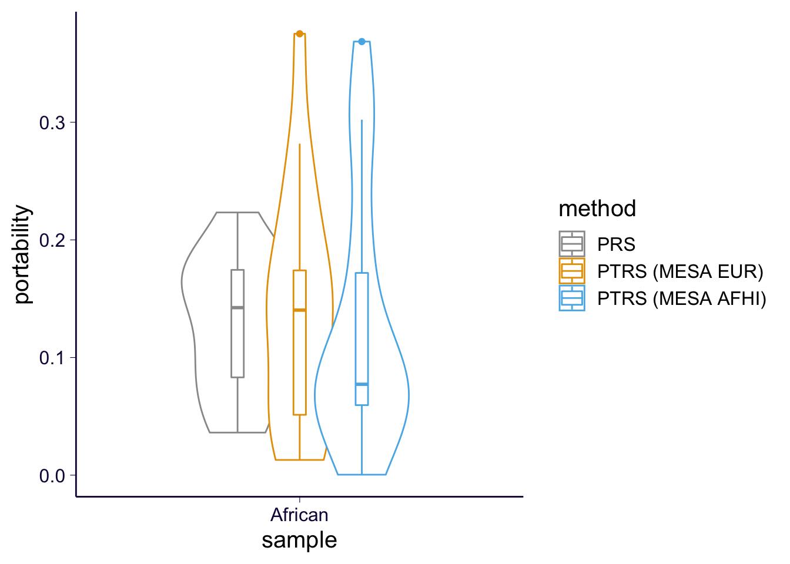
res1 = tmp2 %>% filter((sample == 'African') & (!trait %in% outlier$trait)) %>%
reshape2::dcast(trait + sample ~ method, value.var = 'portability') %>%
do(test_a_vs_b(.$PRS, .$`PTRS (MESA EUR)`))
rownames(res1) = NULL
res2 = tmp2 %>% filter((sample == 'African') & (!trait %in% outlier$trait)) %>%
reshape2::dcast(trait + sample ~ method, value.var = 'portability') %>%
do(test_a_vs_b(.$`PTRS (MESA EUR)`, .$`PTRS (MESA AFHI)`))
rownames(res2) = NULL
rbind(
res1 %>% mutate(type = 'PRS vs MESA EUR'),
res2 %>% mutate(type = 'MESA EUR vs MESA AFHI')
) %>% pander| delta | ci_low | ci_high | pval | wilcox_stat | wilcox_pval | type |
|---|---|---|---|---|---|---|
| -0.01252 | -0.07119 | 0.04615 | 0.657 | 77 | 1 | PRS vs MESA EUR |
| 0.01566 | -0.03042 | 0.06174 | 0.4816 | 108 | 0.1454 | MESA EUR vs MESA AFHI |
# tmp2 %>% filter((sample != 'African') | (!trait %in% outlier$trait)) %>% reshape2::dcast(trait + sample ~ method, value.var = 'portability') %>% do(test_a_vs_b(.$PRS, .$`PTRS (MESA EUR)`))
# tmp2 %>% filter((sample != 'African') | (!trait %in% outlier$trait)) %>% reshape2::dcast(trait + sample ~ method, value.var = 'portability') %>% do(test_a_vs_b(.$`PTRS (MESA EUR)`, .$`PTRS (MESA AFHI)`))Takeaway: As a supplementary, we also compare the PTRS (P+T) portabilities of MESA EUR and AFHI PTRS in AFR individuals.